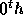
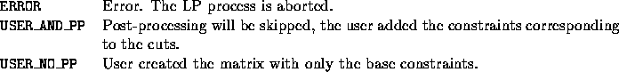

int user_create_lp(void *user, int varnum, var_desc **vars, int
numrows, int cutnum, cut_data **cuts, int *nz,
int **matbeg, int **matind, double **matval,
double **obj, double **rhs, char **sense,
double **rngval, int *maxn, int *maxm,
int *maxnz, int *allocn, int *allocm, int *allocnz)
Based on the instance data contained in the user data structure and
the list of cuts and variables that are active in the
current subproblem, the user has to create the initial LP relaxation
for the search node. The matrix of the LP problem must contain the
variables whose user indices are listed in vars (in the same
order) and at least the base constraints.
An LP is defined by a matrix of constraints, an objective function,
and bounds on both the right hand side values of the constraints and
on the variables. If the problem has n variables and m
constraints, the constraints are given by a constraint coefficient
matrix of size m x n (described in the next paragraph). The sense of
each constraint, the right hand side values and bounds on the right
hand side (called range) are vectors are of size m. The
objective function coefficients and the lower and upper bounds on the
variables are vectors of length n. The sense of each constraint can
be either 'L' ( ), 'E' (=), 'G' ( ) or 'R' (ranged). For
non-ranged rows the range value is 0, for a ranged row the range
value must be non-negative and the constraint means that the row
activity level has to be between the right hand side value and the
right hand side increased by the range value.
Since the coefficient matrix is very often sparse, only the nonzero
entries are stored. Each entry of the matrix has a column index, a row
index and a coefficient value associated with it. An LP matrix is
specified in the form of the three arrays *matval,
*matind, and *matbeg. The array *matval contains the
values of the nonzero entries of the matrix in column order;
that is, all the entries for the  column come first, then the
entries for the  column, etc. The row index corresponding to
each entry of *matval is listed in *matind (both of them
are of length nz, the number of nonzero entries in the matrix).
Finally, *matbeg contains the starting positions of each of the
columns in *matval and *matind. Thus, (*matbeg)[i]
is the position of the first entry of column i in both *matval
and *matind). By convention *matbeg is allocated to be of
length n+1, with (*matbeg)[n] containing the position after
the very last entry in *matval and *matind (so it is very
conveniently equal to nz). This representation of a matrix is known
as a column ordered or column major representation.
column, etc. The row index corresponding to
each entry of *matval is listed in *matind (both of them
are of length nz, the number of nonzero entries in the matrix).
Finally, *matbeg contains the starting positions of each of the
columns in *matval and *matind. Thus, (*matbeg)[i]
is the position of the first entry of column i in both *matval
and *matind). By convention *matbeg is allocated to be of
length n+1, with (*matbeg)[n] containing the position after
the very last entry in *matval and *matind (so it is very
conveniently equal to nz). This representation of a matrix is known
as a column ordered or column major representation.
The arrays that are passed in can be overwritten and have already been
previously allocated for the lengths indicated (see the description of
arguments below). Therefore, if they are big enough, the user need not
reallocate them. If the max lengths are not big enough then she has to
free the corresponding arrays and allocate them again. In this case
she must return the allocated size of the array to avoid further
reallocation. If the user plans to utilize dynamic column and/or cut
generation, arrays should be allocated large enough to allow for
reasonable growth of the matrix or unnecessary reallocations will
result. In order to accommodate *maxn variables, arrays must be
allocated to size *allocn = *maxn + *maxm +1 and *allocnz =
*maxnz + *maxm because of the extra space required by the LP solver
for slack and artificial variables.


The extra constraints are added to the matrix by calling the user_unpack_cuts() subroutine and then adding the corresponding rows to the matrix. This is easier for the user to implement, but less efficient than adding the cuts at the time the original matrix was being constructed.